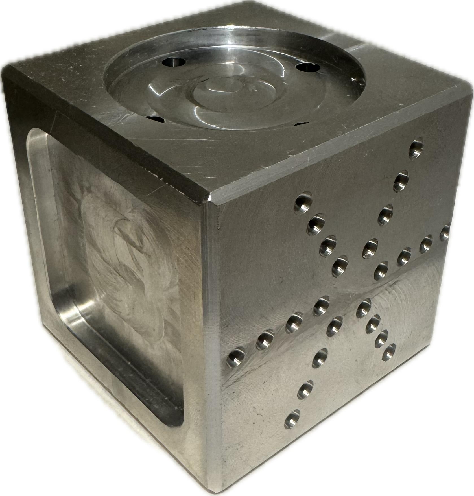

Machine Shop Fabrication & Manufacturing
MEMS 2050 • Manufacturing Laboratory

Project Overview
Through Washington University's Machine Shop Laboratory, I learned the fundamentals of manual machining by manufacturing precision components from engineering drawings. Projects emphasized safe machine operation, dimensional accuracy, and the relationship between design and manufacturing.
Manufacturing Equipment
- Manual Vertical Mill – Face milling, slotting, drilling, and precision material removal.
- Engine Lathe – Turning, facing, center drilling, and diameter control.
- Drill Press – Accurate hole placement and drilling operations.
- Band Saw – Rough stock preparation before machining.
- Measuring Instruments – Calipers, micrometers, and precision measurement tools.
Machined Components
Throughout the course I manufactured multiple precision components while learning machining techniques, setup procedures, and dimensional inspection.



Manufacturing Skills Developed
My Work
I independently manufactured each component by interpreting engineering drawings, selecting machining operations, setting up equipment, and verifying dimensions throughout the fabrication process. Producing each part required careful planning, precise machine operation, and continuous inspection to meet required tolerances.
Project Takeaways
Working in the machine shop strengthened my understanding of how mechanical components are manufactured and reinforced the importance of precision, process planning, and quality control. The experience also improved my ability to design parts with manufacturability in mind, providing valuable hands-on insight that complements my CAD and mechanical design experience.